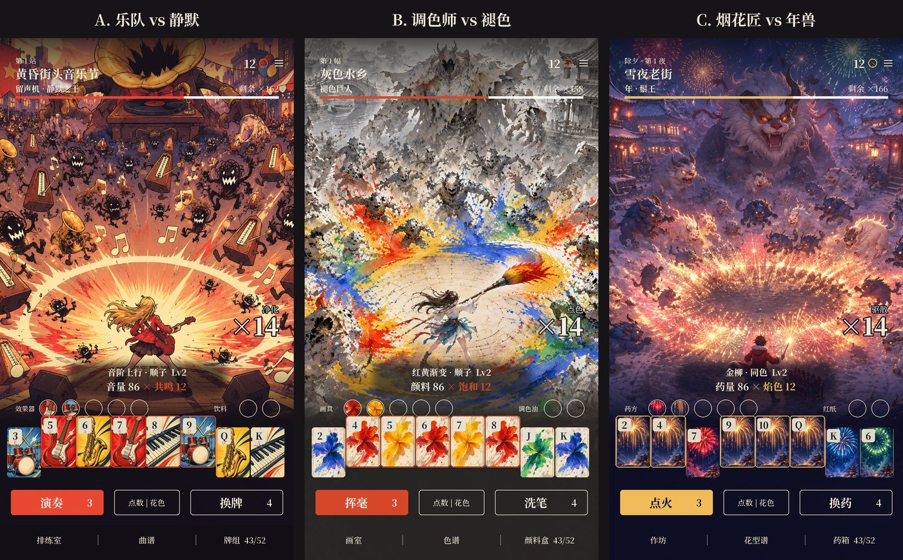
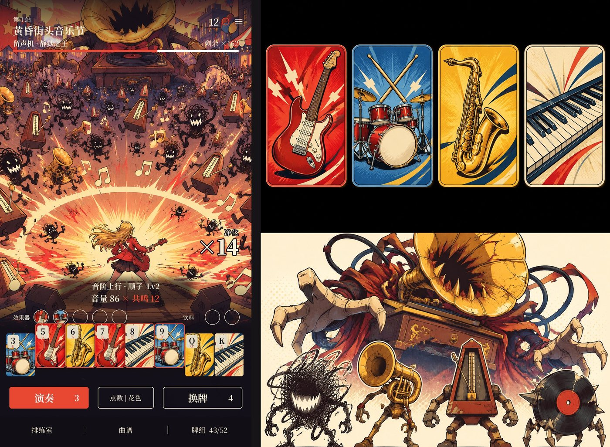
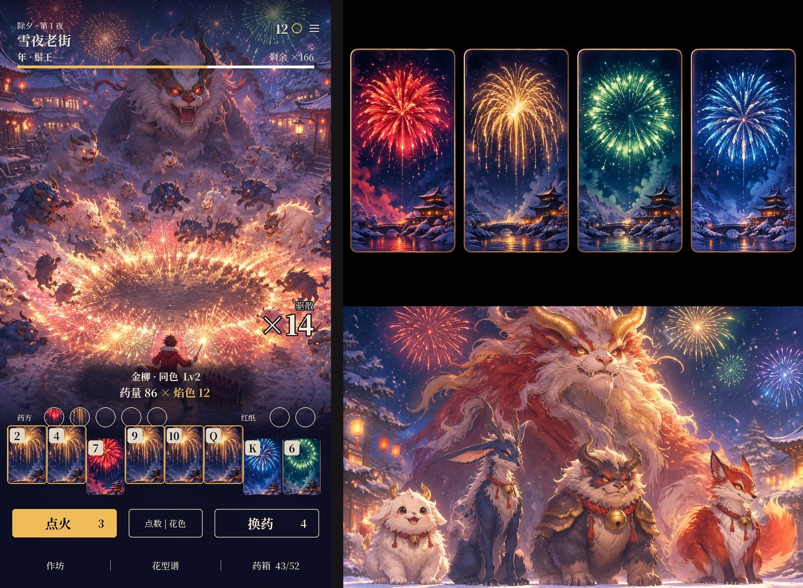

二代立项方案 v5：题材要和「出牌打牌型」天然对上
- 日期：2026-11-11
- 为什么改：你说 v4 的三个题材和玩法不搭，画风也低。这一版先定标准，再选题材，画风整体重做。
- 选题材的标准：像一代「魔法 = 元素组合」那样，四种花色、十三个点数、十二种牌型，在题材里本来就有意义；出什么牌，画面就该放出什么东西。
- 画风：不再拿单张立绘拼战场，改成按围攻阵构图整幅出图，光影、特效、敌人是一体的；牌面也重画，每个题材一套。
- 不变的：
- 战斗布局照《宗师之上》：全屏 3/4 俯视、主角在阵眼、敌人一圈圈围上来；
- 规则引擎一行不改。
- 底子：一代《手搓魔法》（EmberCards），一代仓库和线上应用都不动。厂商 FIRE工作室（507397）。
- 数据：
- 均为 11-11 实抓：TapTap 榜单 6 个，关键词 86 个（
research/v2/keyword-table.md）； - 团队 135 款游戏的后台数据里，没有做过这三个题材。
- 均为 11-11 实抓：TapTap 榜单 6 个，关键词 86 个（
- 图：
docs/v2/img/v5_*。- 战场、牌面、敌人阵容都是团队图片服务（gpt-image-2）这次新出的；
- 界面文字是按布局规格叠上去的。
- 装备栏的两个小圆图标先拿牌面中间那块占位。
0. 结论先说

| A. 乐队 vs 静默（推荐） | B. 调色师 vs 褪色 | C. 烟花匠 vs 年兽 | |
|---|---|---|---|
| 一句话 | 城市被「静默」吞没，你的乐队一手牌就是一段旋律，音浪把噪音怪炸成彩纸 | 世界的颜色被抽干，你一笔泼出去，扫到的怪变回彩色，地面也跟着恢复颜色 | 除夕夜年兽进村，你是烟花匠，一手牌就是一组花型，在兽群头顶炸开 |
| 花色 | 四件乐器：弦 / 鼓 / 管 / 键 | 四种颜料：朱红 / 藤黄 / 群青 / 石绿 | 四种焰色：锶红 / 钠金 / 钡绿 / 铜蓝（真实的焰色化学） |
| 点数 | A～K = 两个八度的音高（C D E F G A B C′…） | 浓淡：A 最淡，K 最浓 | 礼花弹口径：1 寸到 13 寸 |
| 牌型 | 顺子 = 音阶，同花 = 独奏，四条 = 四重奏，五条 = 全员齐奏 | 顺子 = 渐变色阶，同花 = 纯色泼墨，混色出牌 = 混出来的颜色 | 顺子 = 连珠，同花 = 同色大花，四条 = 四重菊，同花五条 = 万花齐放 |
| 搭配度 | ★★★★★：计分时每张牌响自己的音，一手牌就是一句旋律，顺子就是一段上行音阶 | ★★★★：打出去的颜色就是牌的颜色，红 + 黄真的泼出橙色 | ★★★★★：一代的元素魔法换成焰色化学；烟花本来就是范围爆炸 |
| 搜索需求（前 40 合计关注 / 标题含词） | 音游 7,149 万 / 0 款；音乐肉鸽 5,066 万 / 0 款；音乐 4,756 万；乐队 1,670 万 | 画画 995 万；画师 446 万；调色 327 万 | 年兽 258 万（结果多是怪兽游戏）；烟花肉鸽 141 万 / 0 款；烟花 26 万 |
| 爆款依据 | Phigros 1,959 万关注，今天热门榜第 9；音乐世界赛特斯2 645 万；不可思议乐队 20 万 | 画中世界 49 万 / 9.4；倾听画语 29 万 / 9.4；名画展 22 万 / 9.6；制造游戏《从砸矿开始制取颜料吧》今天热门榜第 13 | 春节档：2027 春节是 02-06，正好接在切片之后；烟花模拟器类制造游戏一直有人做 |
| 画风 | 波普漫画：粗墨线、半调网点，奶油 / 墨黑 / 朱红 / 钴蓝 / 芥黄 | 水粉手绘：灰色世界里只有颜料是彩色的 | 动画电影质感：靛蓝雪夜、真实焰色、灯笼暖光 |
| 风险 | 玩家可能把「音乐」当成音游，期待按节奏点；要做 52 个音 × 4 件乐器的音色 | 需求比 A 小；「画画」类玩家偏休闲 | 季节性强，春节后热度掉；搜索数据最弱 |
推荐 A：乐队 vs 静默。 - 搭配最深：四门花色、点数、牌型、装备、计分动画全部能落到音乐上（2.1 节的表），而且是「听得见」的搭配。别的割草游戏学不来。 - 需求最大：「音游」「音乐肉鸽」两个词合计关注都在 5,000 万以上，标题里一款都没有。 - 画风最能跟 TapTap 主流拉开：主流是国风和二次元，A 是波普漫画。
B 是第二选择：画面最好看，「灰色世界被一笔笔涂回彩色」是商店截图最好的对比镜头。
1. 一代给二代留下了什么
| 看什么 | 数据 |
|---|---|
| 留存（同一套规则） | 《命运牌：九重奏》次留 22.2%–27.4%，人均 83–110 分钟，团队 135 款里最好 |
| 吸量 | 首页点击率只有 7.8%–8.5%；团队吸量好的都在 16%–25% |
结论：规则不动，题材和画面全部重做，正好对准一代的短板（吸量）。
2. 三个题材
2.1 A. 乐队 vs 静默（推荐）

世界观： - 一座城市被「静默」吞没：声音被吃掉，留声机、节拍器、破喇叭都活了过来，变成噪音怪。 - 你和你的乐队从街头音乐节演起，一站一站把声音抢回来。
玩法映射（规则一行不改）：
| 一代 | 二代 A | 为什么搭 |
|---|---|---|
| 四种花色 | 弦（吉他）/ 鼓 / 管（萨克斯）/ 键（键盘） | 四件乐器，四种音色 |
| 点数 A～K | 音高：两个八度的 C 大调（A = C，2 = D … 8 = C′ … K = A′） | 计分时每张牌响自己的音，顺子就是一段上行音阶 |
| 魔攻 × 增幅 | 音量 × 共鸣 | |
| 高牌 / 对子 / 两对 / 三条 | 单音 / 双音 / 交替 / 三重奏 | 同音齐奏，越多人越响 |
| 顺子 | 音阶：音浪从左到右扫过一排 | 范围是一条横扫线 |
| 同花 | 独奏：同一件乐器，环形冲击波 | |
| 葫芦 | Riff：和弦 + 低音 | |
| 四条 / 五条 | 四重奏 / 全员齐奏 | 范围越来越大，五条清半屏 |
| 同花顺 / 同花五条 | 华彩独奏 / 终曲 | 全屏 |
| 装备（小丑牌） | 效果器：失真、延迟、混响、合唱…… | 一代的「重新触发」= 延迟（回声），加倍率 = 失真，链式触发 = 合唱 |
| 塔罗 / 星球 | 乐谱（改牌）/ 唱片（升级牌型 = 练习曲） | |
| 击杀 | 净化 ×N：噪音怪被炸成彩纸 |
最大的卖点：计分动画就是音乐。 - 一代计分是一张张牌亮起来加分。A 里每亮一张牌，就响它那件乐器的那个音。 - 所以出一手顺子就是一句上行旋律；效果器触发时音色跟着变。 - 一局下来，玩家「打」出了一首自己的曲子。 - 这是别的割草游戏学不来的记忆点，也是录宣传片最好的素材（声音 + 满屏彩纸）。
敌人： - 杂音团（黑色乱线团，最多） - 破喇叭 - 铁皮节拍器 - 碎唱片轮 - Boss：留声机 · 静默之王（占满上半屏）
名字： 1. 《音乐肉鸽：一手牌奏响整座城》（推荐，「音乐肉鸽」5,066 万 / 标题 0 款） 2. 《乐队肉鸽：和弦炸翻静默之城》 3. 《噪音退散》
风险： - 被当成音游：玩家看到「音乐」可能期待按节奏点击。商店和名字里讲清「出牌 = 演奏」；切片里试一个不动规则的小节奏奖励（只影响演出，不影响分数）。 - 音频工作量：4 件乐器 × 13 个音 = 52 个采样，加效果器的变体。用现成的音色库切，不用请人演奏。 - 漫画风的半调网点放到小屏上要控制密度，切片时真机看。
2.2 B. 调色师 vs 褪色

世界观： - 一座水乡的颜色被「褪色者」抽干。 - 你是学徒调色师，一笔泼出去，扫到的怪变回彩色、碎成颜料，脚下的地也恢复颜色。 - 清完一幅，整幅地图变成彩色。
玩法映射：
| 一代 | 二代 B | 为什么搭 |
|---|---|---|
| 四种花色 | 朱红 / 藤黄 / 群青 / 石绿 | 四种颜料 |
| 点数 | 浓淡：A 最淡，K 最浓 | |
| 顺子 | 渐变：从淡到浓一笔色阶扫过 | 范围是一条弧 |
| 同花 | 纯色：一大片同色泼墨 | |
| 混花色出牌 | 泼出去的颜色 = 混出来的颜色（红 + 黄 = 橙） | 打什么牌，画面就是什么颜色 |
| 装备 | 画具：笔刷、刮刀、喷枪、留白胶…… | |
| 击杀 | 点色 ×N |
卖点：灰色世界被一笔笔涂回彩色，每张商店截图都是「一半灰一半彩」的对比。
名字： 1. 《调色肉鸽：一笔点亮灰色世界》 2. 《褪色之城》 3. 《泼墨肉鸽》
风险： - 需求比 A 小（画画 995 万，标题里已经有 15 款）。 - 画风是水粉，量产时要定死笔触和纸纹，不然每张图手感不同。
2.3 C. 烟花匠 vs 年兽

世界观： - 除夕夜，年兽成群进村。 - 你是村里最年轻的烟花匠，配药、装弹、点火。 - 年兽怕红、怕响、怕火光，烟花就是武器。
玩法映射：
| 一代 | 二代 C | 为什么搭 |
|---|---|---|
| 四种花色（元素） | 锶红 / 钠金 / 钡绿 / 铜蓝 | 真实的焰色化学，就是一代「元素组合成魔法」的翻版 |
| 点数 | 礼花弹口径 1～13 寸 | 越大炸得越大 |
| 牌型 | 花型：单响 / 双响 / 三响 / 连珠（顺子）/ 同色大花（同花）/ 牡丹配菊（葫芦）/ 四重菊（四条）/ 万花齐放（同花五条） | 烟花本来就是范围爆炸，AOE 天然 |
| 装备 | 药方：引信、亮珠、彩烟…… | |
| 击杀 | 驱散 ×N |
卖点：春节档。2027 春节是 02-06，切片和正式制作排得进去；宣传素材全是满天烟花。
名字： 1. 《烟花肉鸽：一手牌炸退年兽》 2. 《除夕守夜人》 3. 《万花齐放》
风险： - 季节性强，春节后热度掉。 - 搜索数据最弱：「年兽」的搜索结果大多是别的怪兽游戏，「烟花」只有 26 万。
3. 美术：这一版怎么做高级
| v4 的问题 | v5 的做法 |
|---|---|
| 战场是一张张立绘贴上去的，光影对不上、特效是程序画的线 | 战场按围攻阵构图整幅出图：主角、敌人、特效、光影一次画完。游戏里拆成「背景 + 敌人 + 特效」三层时，也按这张图定光影和色调 |
| 题材和画风各选各的 | 画风从题材里长出来：乐队 = 演出海报 / 波普漫画，调色 = 水粉画本身，烟花 = 夜空和焰色 |
| 牌面是程序画的方块 | 每个题材一套画出来的牌面（四种花色各一张），角标只留点数（A 还标音名） |
| UI 抢画面 | 界面延续 v4 的克制做法：衬线字、细线、单一强调色、小怪不挂血条；读数下面垫一块柔边暗底，压在亮特效上也读得清 |
4. 战斗布局和割草规则（同 v3 / v4）
- 布局：
- 整屏一张 3/4 俯视地图，主角在中下的阵眼，敌人排 6 圈椭圆围上来；同屏上限 36–40，内圈优先站满。
- 操作区浮在地图上，从上到下：顶栏 → 敌潮细线条 → 牌型读数 → 装备 5 + 道具 2 → 手牌 8 张 → 出牌 / 排序 / 换牌 → 底部导航。
- 规则不改：
- 一波敌人的血量加起来 = 一代这一关的目标分；
- 伤害先扣牌型挑出的那一组，打不完的从最内圈往外扣；
- 按「威力 × 增幅」的实时乘积边算分边倒怪；
- 剩余出牌次数 = 敌潮还有几步。
scripts/game/不改，742 个测试照旧有效。

5. 玩法微调（都可以单独开关）
| # | 改什么 | 动不动规则 | 建议 |
|---|---|---|---|
| T1 | 局外货币按击杀数给：每 10 只 +1 | 只改局外经济 | 开 |
| T2 | 伤害按牌型分到敌潮上、边算分边倒 | 不动，纯表现 | 开 |
| T3 | 剩余出牌次数 = 敌潮收圈 | 不动，纯表现 | 开 |
| T4 | 超杀奖励（+1 金币，每关最多 +2） | 动经济 | 先关 |
| T5 | 出牌快一点（约 7.5 秒 → 5 秒） | 不动，只改节奏 | 开，要你确认 |
| T6（仅 A） | 计分时每张牌按音高发声；可选「踩点」演出 | 不动，纯表现 | 开，A 的核心卖点 |
6. 里程碑、目标
| 阶段 | 内容 | 过关标准 |
|---|---|---|
| 切片 | 新战斗界面 + 第 1 关三波；A 要加 4 件乐器的音色 | 你扫码认可爽感；真机 40 只同屏帧率稳定；同种子回放测试通过 |
| 正式制作 | 8 关美术、文字换皮、局外、音频 | bot 通关率和一代持平（±2%） |
| 预约 | 商店素材、提审 | 走一代的提审清单 |
目标：首页点击率 ≥ 15%（一代约 8%），次留 ≥ 20%，人均 ≥ 60 分钟。
7. 附：之前的方案
| 版本 | 题材 | 结果 |
|---|---|---|
| v4 | 新怪谈 / 深海 / 地府 | 你否了：和玩法不搭、画风低 |
| v3 | 仙门降妖（国风厚涂） | 你否了：题材不新、页游感；布局保留 |
| v2 | 武侠（第一人称） | 布局被 v3 取代 |
| v1 | 末日异能 | — |
8. 要你定
- 题材：A 乐队 vs 静默（推荐） / B 调色师 vs 褪色 / C 烟花匠 vs 年兽？
- 选中题材的画风方向对不对？
- 名字：选中题材下的三个候选选哪个？
- 玩法微调：T1～T6 哪几项开？（建议开 T1、T2、T3、T5、T6，T4 先关）
- 应用：在 FIRE工作室下新建应用（要查本周新游戏额度），还是拿一款数据差的旧应用换成二代？